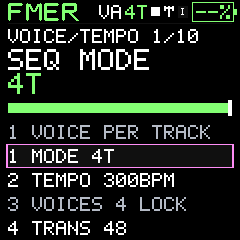
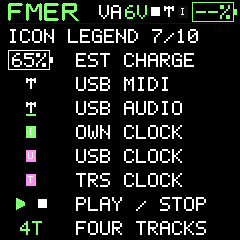
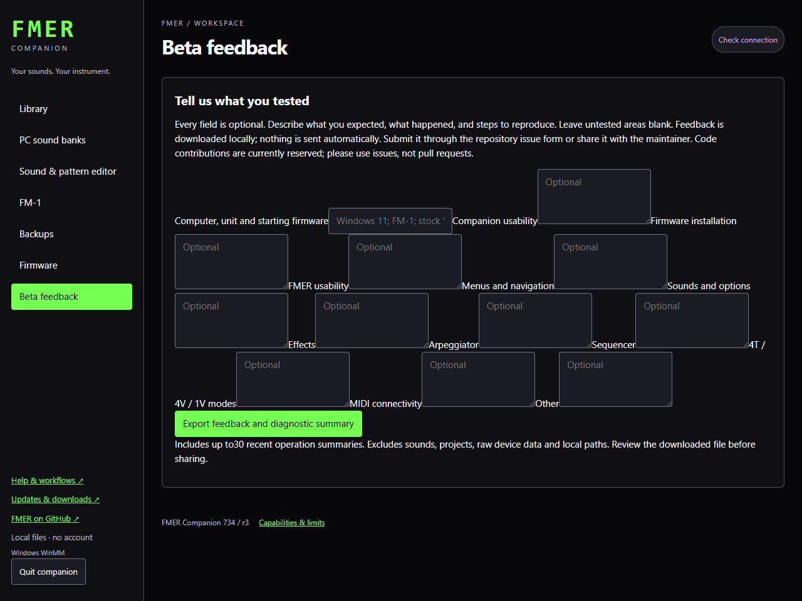

Care and updates
Troubleshooting and diagnostic records
Use the operation result and logs to distinguish transport, storage and musical state.
Windows error 7 or a port cannot open
Close the DAW or disable its FMER MIDI ports. Stop another companion recorder before a transfer. Retry a read first. Do not repeatedly start writes while the prior job is unresolved.
No sound
Check physical master volume, local sound, track levels, mute/solo, instrument envelope and filter settings. Check whether external-clock mode is awaiting Start. An arp also needs an enabled state and held or latched notes. Press transport stop/panic if owned notes need releasing.
A saved project sounds different
Its tracks refer to instrument slots. A later slot overwrite or swap changes those sounds. Restore the matching instruments from the same unit backup or deliberately reassign the project.
USB audio or screen problems
USB audio is one master stream, not four stems. A measured 180-second test completed without a stream reset but accumulated additional underruns; this remains an open reliability issue. Physical display tearing also remains under investigation. Neither is claimed fixed by this companion update.
Battery percentage unavailable
An unknown battery indication means the measurement/calibration is not qualified. A precise-looking invented percentage would be misleading. Use the current hardware evidence rather than treating a placeholder as a calibrated gauge.
Import refused or revision conflict
Check the file's actual format and checksum; native records, DX7 files, catalogs and unit backups are not interchangeable. Refresh after another tab changes the library. A failed validation does not authorize discarding existing data.
Operation interrupted
Inspect the job result and completed-write list before retrying. Local operation records live beneath the companion library's operations directory; unit sessions and transfer journals are retained under the workspace artifacts where reported by the job. Logs contain state and counters, not an automatic microphone recording or video of your gestures. Export only the relevant diagnostic records; private dumps and personal compositions need not be shared.
The launcher cannot start
Extract the entire portable ZIP and keep its folders together. Python and the sound renderer are included. Start FMER Companion.exe, not a Python file. If startup fails, inspect the launcher log in the companion AppData folder. No machine-wide Python installation is required.
Live keys while stopped
With the sequencer stopped and no recording armed, physical keys and arps audition the selected instrument through saved mute/solo settings. Track level, FX routing and Local Off still apply. Starting playback or recording restores mixer mute/solo control. Audition does not change or save your mix. Incoming external MIDI continues to follow mixer mutes.
Beta feedback
Open Beta feedback in the companion. Fill only the areas you tested: Companion, flashing, FMER, navigation, sounds, effects, arp, sequencer, voice modes, MIDI or other observations. Export feedback and diagnostic summary, review the file, and attach it to a GitHub issue or share privately with the maintainer. No automatic upload occurs. The summary excludes patches, projects, raw MIDI, ROMs and local paths. Do not post your entire AppData folder publicly. Code-contributor status is reserved; use issues rather than pull requests.
Battery outline colors
White is normal battery operation. Green means the firmware detects a configured, active USB data connection; the host may be a PC or another FMER. It is a connection cue, not measured charging current. Pink means the estimate is below10%, and overrides green. A charge-only supply may not enumerate USB and therefore may not turn the icon green. The FM-1 exposes no verified charger-state signal to FMER. Use the unit's hardware charge light to check charging itself.




